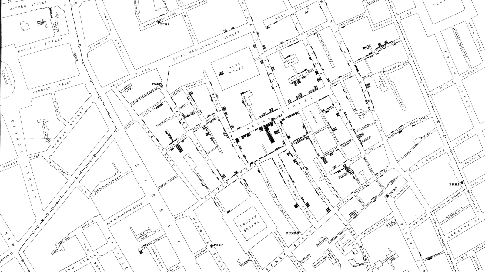

John Snow.
1854 Broad Street Cholera Outbreak.
How John Snow stopped the Cholera Outbreak in Soho
How John Snow stopped the Cholera Outbreak in Soho
The Cholera incident struck Britain in the 19th century (1854) resulting in tens of thousands casualities. At the time scientists thought the disease was spread through the air. John Snow was a doctor living in London and believed in a different theory. He hypothesized that the infected water was the problem.
By plotting the Cholera cases on a map it led him to believe his theory was correct. The water pump at Broadwick Street was contaminated and Snow persuaded the local authorites to remove it. With that action the Cholera outbreak diminished.
